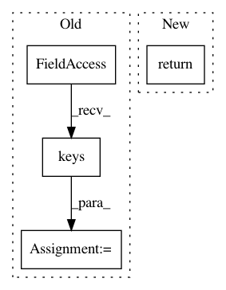

05ad4c74996133f95c0d5100784ba84a3b8e8093,dashboard/datacenter.py,DataOrganizer,get_all_actors,#Any#,186
Before Change
@classmethod
async def get_all_actors(cls):
all_actors = {}
for node_id in DataSource.nodes.keys():
all_actors.update(await cls.get_node_actors(node_id))
return all_actors
@classmethod
async def get_actor_creation_tasks(cls):
After Change
@classmethod
async def get_all_actors(cls):
return {
actor_id: await cls._get_actor(actor)
for actor_id, actor in DataSource.actors.items()
}
@staticmethod
async def _get_actor(actor):
actor = dict(actor)
In pattern: SUPERPATTERN
Frequency: 3
Non-data size: 4
Instances
Project Name: ray-project/ray
Commit Name: 05ad4c74996133f95c0d5100784ba84a3b8e8093
Time: 2020-10-27
Author: fyrestone@outlook.com
File Name: dashboard/datacenter.py
Class Name: DataOrganizer
Method Name: get_all_actors
Project Name: microsoft/nni
Commit Name: 262fabf111006c99e7415093c78e9c26d3ebe0f0
Time: 2019-11-14
Author: 38930155+chicm-ms@users.noreply.github.com
File Name: src/sdk/pynni/nni/compression/tensorflow/compressor.py
Class Name: Compressor
Method Name: select_config
Project Name: autonomio/talos
Commit Name: 2a05cf473ffd4732e4c0962ad5d3a5905a77a843
Time: 2019-03-01
Author: johan.mollevik@sogeti.se
File Name: talos/parameters/round_params.py
Class Name:
Method Name: round_params